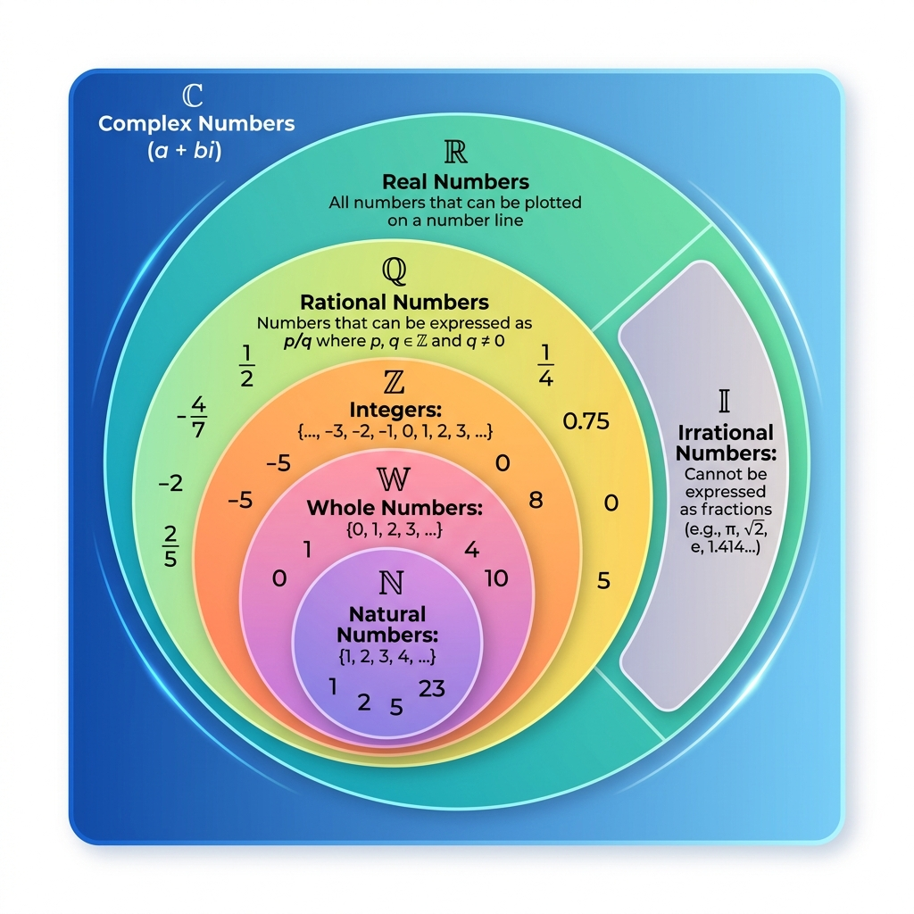
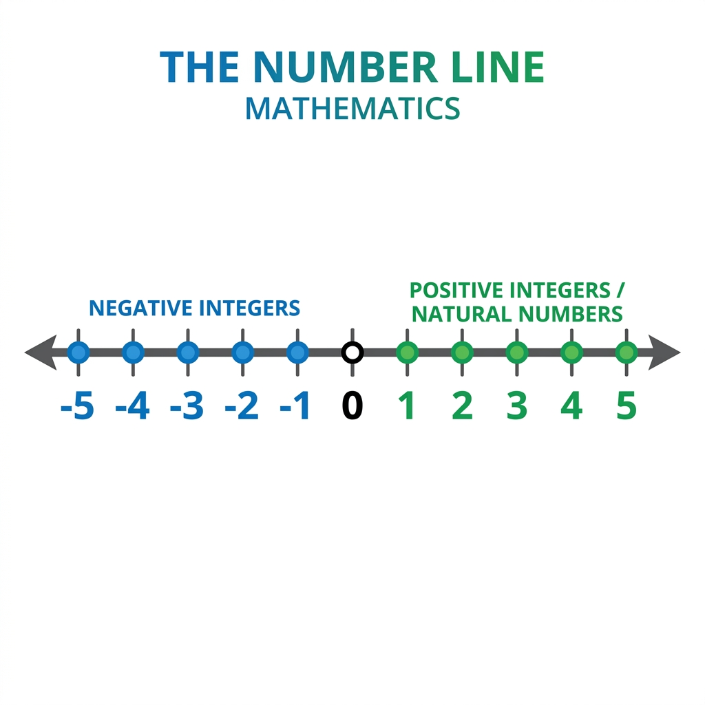
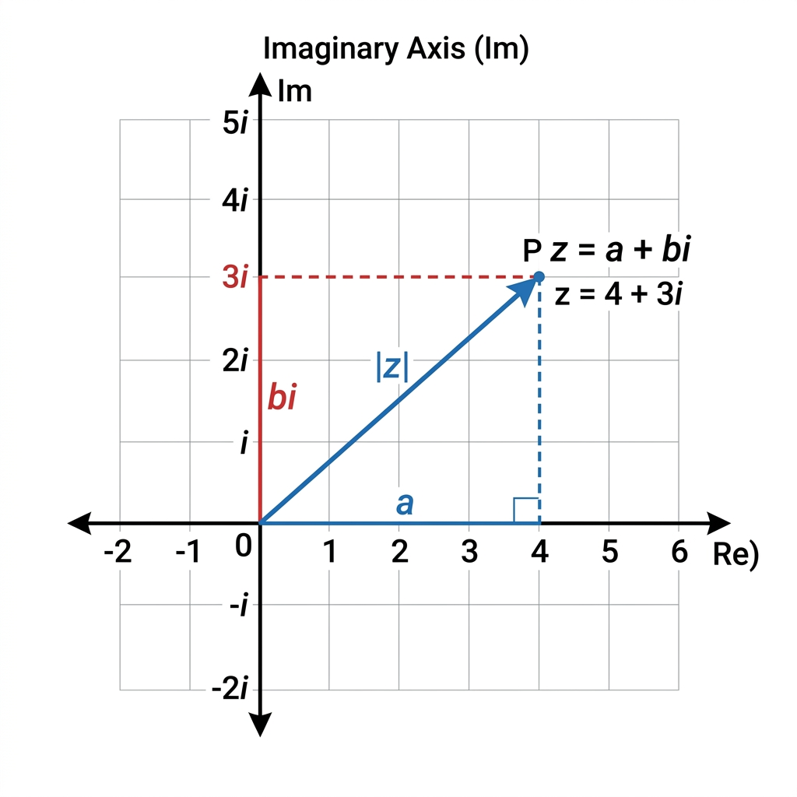

Number Sets & Systems#
Understanding number classification and arithmetic rules is fundamental to data representation, indexing, and mathematical operations in Data Science.

Fig. 2 Hierarchy of number sets.#
1. Natural Numbers (\(\mathbb{N}\))#
The natural numbers are the positive counting numbers \(1, 2, 3, \dots\), possibly including \(0\) as well depending on the mathematical convention:
Starting with \(0\) corresponds to the non-negative integers: \(\{0, 1, 2, 3, \dots\}\).
Starting with \(1\) corresponds to the positive integers: \(\{1, 2, 3, \dots\}\).
Roles of Natural Numbers#
Natural numbers serve three distinct roles in data and everyday life:
Cardinal Numbers: Used for counting quantities (e.g., “there are six coins on the table”).
Ordinal Numbers: Used for ordering or ranking (e.g., “this is the third largest city in the country”).
Nominal Numbers: Used purely as labels or identifiers, carrying no quantitative value (e.g., sports jersey numbers or user ID codes).
Set Notation: \(\mathbb{N} = \{1, 2, 3, 4, 5, \dots\}\)
2. Whole Numbers (\(\mathbb{W}\))#
Whole numbers consist of all natural numbers together with zero (\(0\)).
Set Notation: \(\mathbb{W} = \{0, 1, 2, 3, 4, \dots\}\)
Data Science Note: Zero-indexed data structures (such as Python lists, NumPy arrays, and Pandas DataFrames) rely on whole numbers for indexing positions \(0, 1, 2, \dots, n-1\).

Fig. 3 Whole numbers starting at zero and their application in 0-based array indexing.#
3. Integers (\(\mathbb{Z}\))#
Integers extend whole numbers to include negative values. In mathematics, the set of integers is denoted by the boldface letter \(\mathbb{Z}\) (from the German word Zahlen, meaning “numbers”).
Set Notation: \(\mathbb{Z} = \{\dots, -5, -4, -3, -2, -1, 0, 1, 2, 3, 4, 5, \dots\}\)

Fig. 4 Number line showing negative integers, zero, and positive integers.#
4. Rational Numbers (\(\mathbb{Q}\))#
A rational number is any number that can be expressed as the quotient or fraction \(\frac{p}{q}\) of two integers, where \(p\) is the numerator and \(q \neq 0\) is the non-zero denominator.
The set of all rational numbers is denoted by the boldface letter \(\mathbf{Q}\) or blackboard bold \(\mathbb{Q}\) (for “quotient”).
Examples: \(\frac{1}{2}\), \(\frac{-3}{7}\), and every integer since any integer \(k\) can be written as \(\frac{k}{1}\) (e.g., \(5 = \frac{5}{1}\)).
Decimal Expansion: Rational numbers have decimal expansions that either terminate (e.g., \(\frac{3}{4} = 0.75\)) or repeat infinitely (e.g., \(\frac{1}{3} = 0.3333\dots\)).
5. Irrational Numbers (\(\mathbb{I}\))#
Irrational numbers cannot be expressed as a fraction \(\frac{p}{q}\) of two integers.
Geometrically, when the ratio of lengths of two line segments is an irrational number, the segments are described as incommensurable — meaning they share no common unit of measure, no matter how small, that can divide both lengths into exact integer multiples.
Key Characteristics & Famous Examples#
Irrational numbers possess an infinite number of non-repeating decimal digits:
Circle Ratio (\(\pi\)): \(\pi = 3.14159265\dots\) (the ratio of a circle’s circumference to its diameter).
Euler’s Number (\(e\)): \(e = 2.71828182\dots\) (the base of the natural logarithm).
Golden Ratio (\(\phi\)): \(\phi = \frac{1 + \sqrt{5}}{2} \approx 1.618033\dots\)
Square Roots: \(\sqrt{2} \approx 1.414213\dots\), \(\sqrt{3}\), \(\sqrt{5}\). In fact, all square roots of natural numbers that are not perfect squares are irrational.
Non-repeating Decimals: Patterns like \(2.010010001\dots\)
6. Real Numbers (\(\mathbb{R}\))#
The set of Real Numbers (\(\mathbb{R}\)) is the union of all rational and irrational numbers.
In practical Data Science and Machine Learning, almost all continuous feature values (such as prices, weights, temperatures, or probability scores) are represented as real numbers using floating-point data types (float32 or float64).
7. Complex and Imaginary Numbers (\(\mathbb{C}\))#
Imaginary Numbers#
Numbers that are not real are called imaginary numbers. Squaring an imaginary number yields a negative result.
Examples: \(\sqrt{-2}\), \(\sqrt{-7}\), \(\sqrt{-11}\).
Imaginary numbers arose historically to solve polynomial equations like \(x^2 + 1 = 0\), whose solutions \(x = \pm\sqrt{-1}\) cannot exist within the real number line \(\mathbb{R}\). We denote \(\sqrt{-1}\) with the symbol \(i\) (called iota), so \(i^2 = -1\).
Complex Numbers#
A Complex Number is a combination of a real number and an imaginary number written in the standard form:
\(a\) is the Real Part (\(\text{Re}(z)\)).
\(b\) is the Imaginary Part (\(\text{Im}(z)\)).

Fig. 5 Complex plane representation of a complex number.#
8. Order of Operations (PEMDAS)#
When evaluating mathematical expressions, we must follow the strict order of operations (PEMDAS) to ensure consistent results:
Parentheses
()Exponents (Powers and Roots)
Multiplication and Division (left to right)
Addition and Subtraction (left to right)
Python Verification#
Python automatically enforces PEMDAS rules:
# Expression: 3 + 5 * 2^3 - (4 / 2)
# 1. Parentheses: (4 / 2) -> 2.0
# 2. Exponents: 2^3 -> 8
# 3. Multiplication: 5 * 8 -> 40
# 4. Addition & Subtraction: 3 + 40 - 2.0 -> 41.0
result = 3 + 5 * 2**3 - (4 / 2)
print("Result of expression:", result) # Output: 41.0
Exercises#
Exercise 1
Evaluate the expression using PEMDAS rules:
Verify your answer with Python.
Solution — Exercise 1
According to PEMDAS:
Parentheses: \((2 + 1) = 3\)
Exponents: \(3^2 = 9\)
Multiplication/Division (left to right): \(3 \times 9 \div 9 = 3\)
Addition/Subtraction (left to right): \(12 - 3 + 4 = 13\)
ans = 12 - 3 * (2 + 1)**2 / 9 + 4
print("Answer:", ans) # Output: 13.0